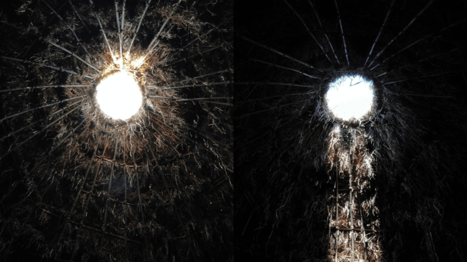
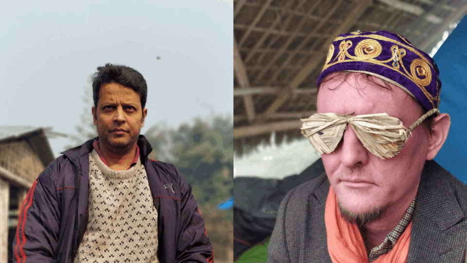
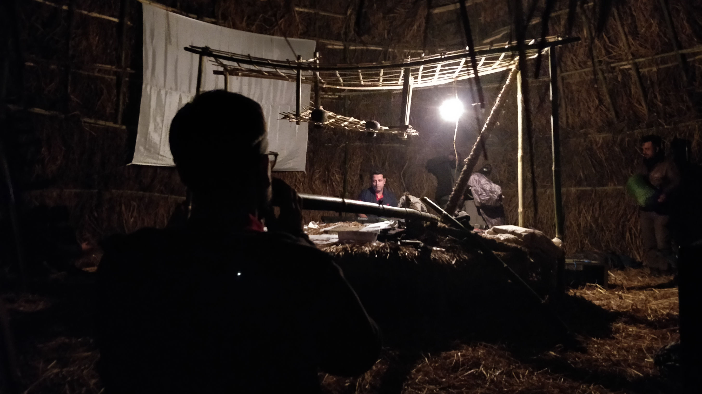
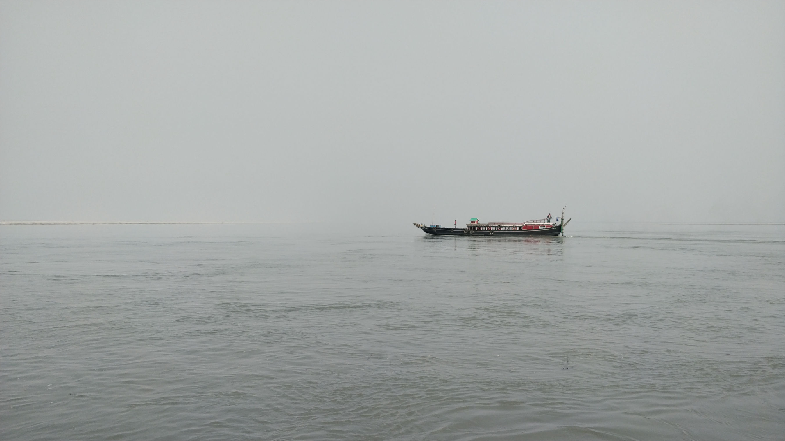

Assembly of desire is a multidisciplinary symposium and festival initiated by Desire Machine Collective extending the project Periferry at Majuli island in Assam from 12-15 January 2018. As a part of this project, worked on various aspects of documentation of the unfolding of the dreams and desires of the diverse group as photography, videos and book design.

As a socially engaged project, which is site-specific and event-driven, the project Assembly which is located on the Majuli island will engage with the very processes of living in the space, and attempt to blur the line between art and life. It uses art to affect social dynamics and addresses social relations. It offers an opportunity for complex and exciting mode of cultural production in a local context producing works by collaborations and a community context. The process will emphasize participation, dialogue, and action, and will appear in situations ranging from the performative to activism to urban planning to visual art to ecology. The participants will be sharing techniques and intentions and exploring new methods where process and experience are central.


